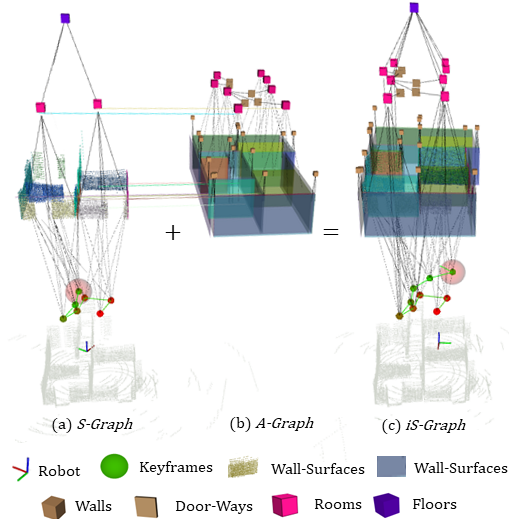
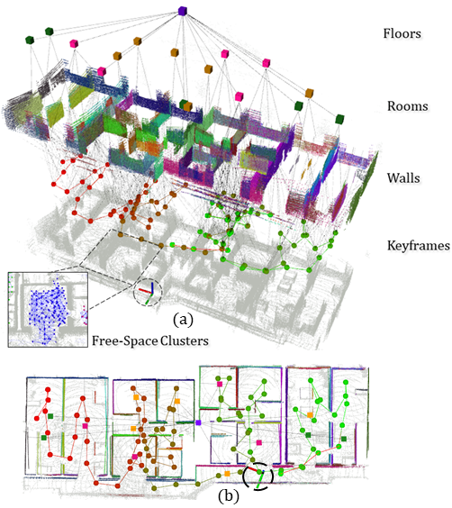

I am a third year PhD student at University of Luxembourg advised by Holger Voos, working primarily on Situational Awareness for robots , 3D scene understanding, and SLAM.
Recently I'm interested in leveraging NeRF for language grounding, and how it could change how we interact with 3D.
Previously I finished my bachelor's at NUST Pakistan, and completed my master's in Robotics at SDU Denmark, where I worked with Leon Bodenhagen on LiDAR SLAM.
Better Situational Graphs by Inferring High-level Semantic-Relational Concepts
Jose Andres Millan-Romera, Hriday Bavle, Muhammad Shaheer, Martin R. Oswald, Holger Voos, Jose Luis Sanchez-Lopez
ICRA 2024
arXiv / Video
We propose a Graph Neural Network (GNN) for learning high-level semantic-
relational concepts that can be inferred from the low-level factor graph

Graph-based Global Robot Localization Informing Situational Graphs with Architectural Graphs Muhammad Shaheer , Jose Andres Millan-Romera, Hriday Bavle, Jose Luis Sanchez-Lopez, Javier Civera, Holger Voos
IROS 2023
arXiv / Video
We develop a method for converting the plan of a building into an architectural graph (A-Graph). When the robot starts moving in an environment, and it estimates an online situational graph representation (S-Graph) of its surroundings. We develop a novel graph-to-graph matching method, to relate the S-Graph and A-graph.

S-Graphs+: Real-Time Localization and Mapping Leveraging Hierarchical Representations
Hriday Bavle, Jose Luis Sanchez-Lopez, Muhammad Shaheer, Javier Civera, Holger Voos
RA-L 2023, Oral Presentation Website
/
OpenReview
We present an evolved version of Situational Graphs, which jointly models in a single optimizable factor graph (1) a pose graph, as a set of robot poses,
and (2) a 3D scene graph, as a high-level representation of the environment that encodes its different geometric elements with semantic attributes
and the relational information between them.
{kind=link}